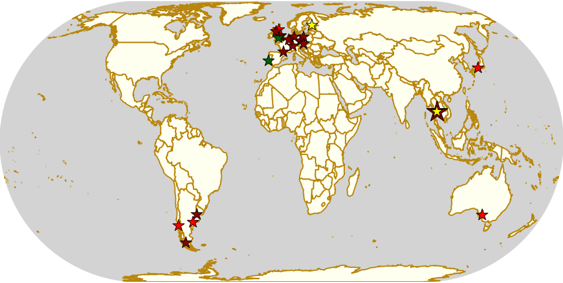
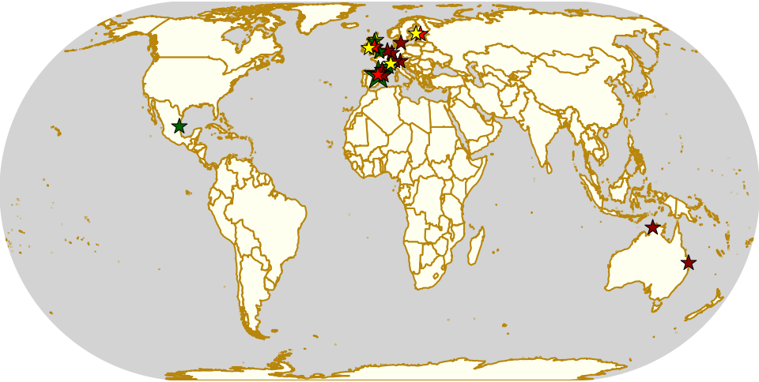
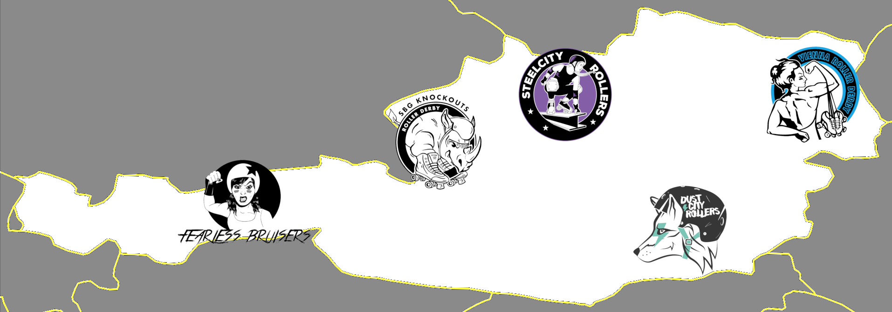
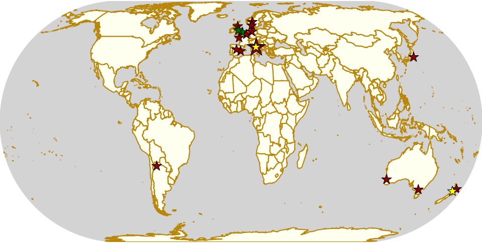

Weekend Highlights: 07 Dec 2019
As we approach the end of the year, there's an increasing density of festive tournaments, so once again, this weekend is so busy that we'll need a follow-up event just for the Sunday fixtures.
This Saturday and whole-weekend, though, we have a host of highlights, including Nottingham's 10th anniversary, a whole-weekend bootcamp with ShortStop in Thailand, and a quadruple header in the south of France with Roller Derby Toulouse.
The rules are, as usual: highlights limited to 1 event per country, with an "extra" event allowed for a different kind of fixture (so, 1 tournament and 1 bootcamp), or if they involve Scottish leagues (since we are the Scottish Roller Derby Blog). Other notability might also allow the extra event - great posters, notable teams, etc. (League birthdays may count as "special" enough, at our discretion ;) )
In a bid to make this list as useful as possible, we've avoided links to Facebook except where noted. (Links to Teams are to non-Facebook resources - Instagram, or actual team pages - we'd strongly recommend that Teams get themselves an actual webpage [we can help host one if you need help]).
Locations are roughly organised East-West (with things before the weekend out sequence at the start).
Weekend Highlights: 01 Dec 2019 (SUNDAY)
This is the Sunday addendum to our weekly highlights, giving events on the 1st a bit of space to breathe!
As well as action in Colombia as part of the 10th anniversary of Roller Derby in the country, there's also a bunch of open scrims in Australia and the UK, a triple header in France, action in Mexico and Argentina... and more chances to try Short Track Roller Derby in Worcester, UK.
The rules are, as usual: highlights limited to 1 event per country, with an "extra" event allowed for a different kind of fixture (so, 1 tournament and 1 bootcamp), or if they involve Scottish leagues (since we are the Scottish Roller Derby Blog). Other notability might also allow the extra event - great posters, notable teams, etc. (League birthdays may count as "special" enough, at our discretion ;) )
In a bid to make this list as useful as possible, we've avoided links to Facebook except where noted. (Links to Teams are to non-Facebook resources - Instagram, or actual team pages - we'd strongly recommend that Teams get themselves an actual webpage [we can help host one if you need help]).
Locations are roughly organised East-West (with things before the weekend out sequence at the start).

RNR 2019
A little delayed, due to there being so much stuff, we'd like to celebrate the 10th anniversary of the first Roller Derby League in Colombia: Rock N Roller Queens . Starting back in 2009, RRQ were the start of a rapid swell of Colombian roller derby - over the following two years, a full 10 leagues had come into existence, many (including RRQ) based in the capital, Bogotá, but also across the other cities.

With the rapid growth of Roller Derby in Colombia, their first National Tournament was held in 2012, and the Rock n Roller Queens won, defeating second place Bogotá Bone Breakers (who were also the second league to form in the country). The following month, July 2012, they also made history by being accepted as the first ever South American league to join the WFTDA Apprentice program. They were also one of the few leagues in Colombia to have both A and B teams, with their Queens forming soon after their membership.
Both of RRQ's teams were also founding members of Bogotá's "District Tournament", which has run from 2014 to 2018 so far. The District Tournament has been one of two tournaments feeding into Colombia's National Tournament (the other being their Regional Tournament covering the areas outside Bogotá), and RRQ have never failed to qualify for that event, in years in which it has run.
From 2014 to 2016, as full WFTDA members, RRQ's travel team actively participated in WFTDA Sanctioned Play, with a consistent performance (taking into account the rapid growth of leagues, and the inherent inflationary nature of WFTDA Ratings year-on-year). In the last few years, no Colombian team has achieved a WFTDA ranking...
...however, on their 10th anniversary, RRQ told us that they have plans to change this. Over their lifespan, the Rock n Roller Queens have undergone what they refer to as "important generational changes", and the new league are planning to make a splash on the WFTDA Sanctioned tournament circuit in 2020.
As part of this, Rock n Roller Queens are also planning a rebranding exercise, which will be open to artists across the world. (We hope that this won't be expecting the artists to work for free...).
We're looking forward to RRQ's 2020... but before that, they're hosting their annual " Derbynaldos " [link to Facebook] end of year contest this weekend, which has a special resonance in this year.
Meet the (new) Roller Derby Nations Committee Exec
Those who've been following the news this year will be aware that the Roller Derby Nations Committee - the body representing all of the National Teams in designing, planning and delivering the Roller Derby World Cups - has recently elected new Regional Representatives.
These Regional Representatives each sit on the Executive of the RDNC, and are responsible for representing all of the Nations in their Region, and, conversely, representing the RDNC Exec to those same Nations, via each Nation's Representative. As such, having a full set of Regional Representatives is essential in order to make progress with National Teams business worldwide.
With 4 of the 7 seats on the RDNC Exec newly elected, we thought we'd let you get to know them all a little better with some self-provided profiles.
Weekend Highlights: 30 Nov 2019
As this is once again, a very busy weekend, we'll be bringing you this update in two parts - this post, and a Sunday addendum . (As most of the events in Latin America are on Sunday, that means that the map for this update looks a bit unbalanced...)
There's a bunch of things this Thursday - mostly open scrimmages, in Aberdeen, Geneva, and Bundaberg (the latter is a "pot luck" game, so open to the public, but still open subs). On the weekend, Helsinki is celebrating 10 years of Roller Derby in Finland with a party; and Cologne are celebrating 10 years of derby in Köln with a two-day international tournament! (Blackpool are also celebrating 7 years with a party on Friday.)
The big national events are in Innsbruck, where the Fearless Bruisers host the third ever Austrian National Championship, and in Toulouse, where the Championnat de France Nationale 1 has a two-day fixture. (In Turku, there's a Suomi Cup fixture, but it's closed to the public.)
The rules are, as usual: highlights limited to 1 event per country, with an "extra" event allowed for a different kind of fixture (so, 1 tournament and 1 bootcamp), or if they involve Scottish leagues (since we are the Scottish Roller Derby Blog). Other notability might also allow the extra event - great posters, notable teams, etc. (League birthdays may count as "special" enough, at our discretion ;) )
In a bid to make this list as useful as possible, we've avoided links to Facebook except where noted. (Links to Teams are to non-Facebook resources - Instagram, or actual team pages - we'd strongly recommend that Teams get themselves an actual webpage [we can help host one if you need help]).
Locations are roughly organised East-West (with things before the weekend out sequence at the start).
The First SRDB Awards - Nominations Open!
End of Year awards are a tradition in a lot of communities, and they're one way to highlight and recognise contribution within that community. For the last several years, the Talk Derby To Me podcast ran them for Roller Derby. With TDTM in a quiescent state currently, we reached out to the podcast's founder to get permission to take on the mantle.
As you might guess from this post existing, he agreed.
So, this article will introduce the ground-rules for the first ever SRDB Awards.
SRDB AWARDS 2019

The SRDB Awards, as with the TDTM Awards before them, are entirely delivered by the community, and provide a chance to recognise contributions to Roller Derby in a range of categories.
Anyone can nominate any number of candidates for each and any of our categories: you must, however, provide a suitable reason for why they should win. This reason will be shown to voters when voting, so try to make it convincing! You can nominate for any reason, as long as you explain it. You may nominate in any language, and we will translate [but we may need to talk to you to confirm - please specify your contact details if you want to be contacted].
(Even being nominated will give your nominee visibility, so please do nominate even if you are worried about them winning - winning isn't everything, and being nominated is really the core thing here.)
(SRDB reserves the right to remove obviously trolling nominations, but we promise to have a light touch here; we will also remove or recategorise nominations which don't match their category.) SRDB will not nominate anyone for any categories themselves.
A basic announcing guide - before the whistle: King Crazy
There's not enough writing about Announcing strategy in roller derby, so we're very pleased to be able to host this guest post from the very experienced King Crazy.
Hey all! I'm King Crazy, an announcer and bench coach. I've been involved in derby for about 9 years, announced around 300 games and benched around 80. I've been lucky enough to work 4 World Cups (1 as co-tournament head announcer), WFTDA playoffs, MRDA playoffs, ECDX, British Champs Playoffs, amongst others.
This is my guide to what I do to prepare to announce BEFORE the whistle goes.
King Crazy [Photo: Roller Derby on Film / Jason Ruffell ]
Weekend Highlights: 24 Nov 2019 (SUNDAY)
This is the Sunday addendum to our weekly highlights, giving events on the 24th a bit of space to breathe!
The rules are, as usual: highlights limited to 1 event per country, with an "extra" event allowed for a different kind of fixture (so, 1 tournament and 1 bootcamp), or if they involve Scottish leagues (since we are the Scottish Roller Derby Blog). Other notability might also allow the extra event - great posters, notable teams, etc. (League birthdays may count as "special" enough, at our discretion ;) )
In a bid to make this list as useful as possible, we've avoided links to Facebook except where noted. (Links to Teams are to non-Facebook resources - Instagram, or actual team pages - we'd strongly recommend that Teams get themselves an actual webpage [we can help host one if you need help]).
Locations are roughly organised East-West (with things before the weekend out sequence at the start).

Austrian Nationals 2019
Most of the National Tournaments we cover have been running for many years, but as Roller derby expands across the world, we see newer tournaments establishing themselves in additional Nations. One such newer tournament is the Austrian Championship, which enters its third year on the 30th of November.
We talked to 2019 hosts, the Fearless Bruisers of Roller Derby Innsbruck about the tournament, and how it is already growing.
Austria has had Roller Derby for some time, with Vienna Roller Derby having been playing since 2011, including internationally. However, for much of that time, they were literally the only league in the country, with most of their bouts played across the borders in Switzerland or Germany (or further afield in Europe). It was only in 2015 that additional teams were founded, in Linz, followed in 2017 by Graz and Innsbruck, and most recently in Salzburg in 2018. In 2020, we expect to see even more leagues form, as the trend of Roller Derby in Central and Eastern Europe continues to point upward.
Weekend Highlights: 23 Nov 2019
You might think things would slow down in derby in late November, but this is still an exceptionally busy week, worldwide. There's multiple tournaments and international bouts: returning tournaments in Belgium, with Skate Around #3; in Italy, with Scusa Mamma, Ma Sono Una Derby Girl; and in Argentina, with Juguemos Pué; in the UK, returing Roller Derby Sevens and Sur5al events; and continuing tournament series in Germany, France, and Japan (where Derby Nights 4x4's fixture is extra long due to the postponed bout in October).
The rules are, as usual: highlights limited to 1 event per country, with an "extra" event allowed for a different kind of fixture (so, 1 tournament and 1 bootcamp), or if they involve Scottish leagues (since we are the Scottish Roller Derby Blog). Other notability might also allow the extra event - great posters, notable teams, etc. (League birthdays may count as "special" enough, at our discretion ;) )
In a bid to make this list as useful as possible, we've avoided links to Facebook except where noted. (Links to Teams are to non-Facebook resources - Instagram, or actual team pages - we'd strongly recommend that Teams get themselves an actual webpage [we can help host one if you need help]).
Locations are roughly organised East-West (with things before the weekend out sequence at the start).
